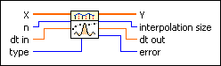

Interpolate 1D Fourier VI
Owning Palette: Interpolation & Extrapolation VIs
Requires: Full Development System
Performs interpolation by transforming the array X into the frequency domain, zero-padding and scaling appropriately for the interpolation factor you want and to maintain correct symmetry in the frequency domain, and then transforming back into the time domain to form the output interpolated array Y out.

 Add to the block diagram Add to the block diagram |
 Find on the palette Find on the palette |